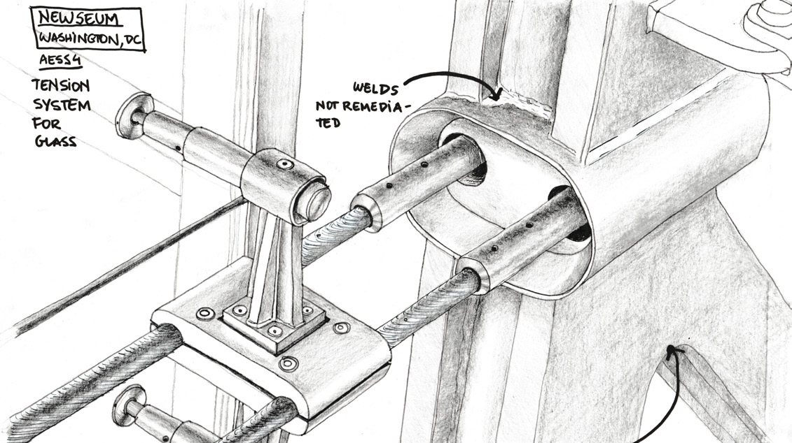
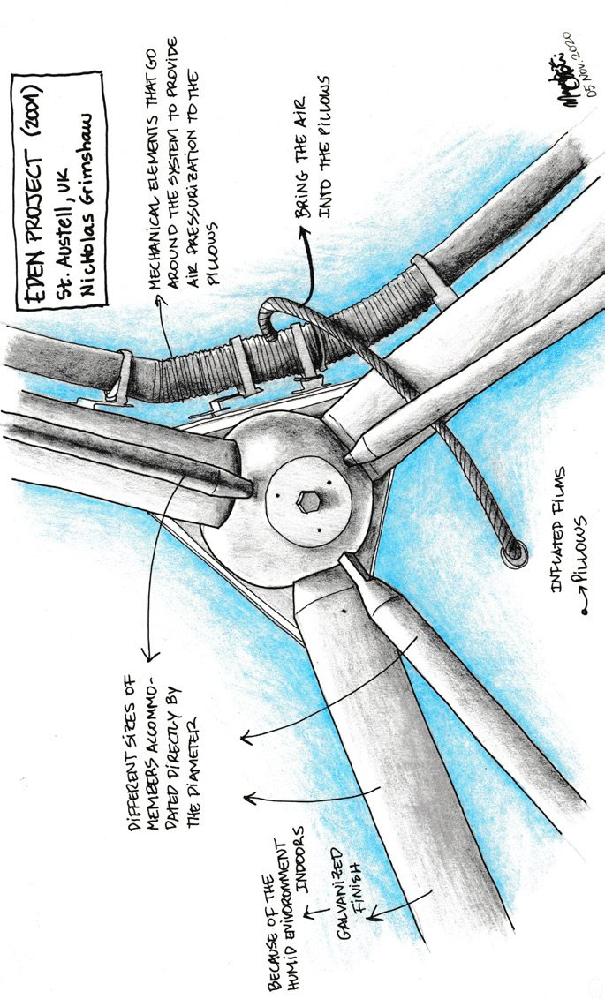
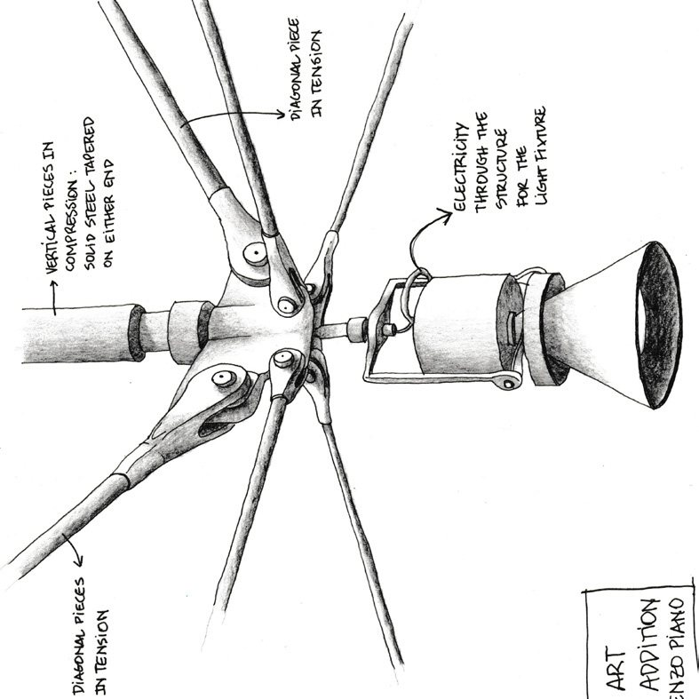

Academic · 2016-2022
Hans Christian Andersen Museum Study
A hand-drawing study exploring a landscape-driven museum proposal through plans, sections, and spatial sequencing.
Project Summary: This museum proposal explores the relationship between architecture and landscape through a series of interconnected circular galleries organized without a central hierarchy. Located primarily below ground, the exhibition spaces are traced above by a continuous curvilinear green wall that shapes gardens and circulation paths across the site. Visitors move between interior and exterior conditions through layered spaces, sunken gardens, and shifting boundaries inspired by themes of duality found in Andersen's work - nature and manmade, real and imagined, light and shadow. Beyond the museum, the proposal also reconnects previously divided parts of the city, transforming an underutilized urban edge into a vibrant public landscape.
Architectural Study / Hand Drawings: Although I was not involved in the design of this project, I was deeply inspired by its curvilinear and organic spatial language and chose to redraw it through hand drawings as a personal architectural study. I was particularly drawn to the meandering forms and the seamless integration between landscape and built form, where nature and architecture are not treated as separate elements but as a unified experience. Through this process, I explored lessons in spatial sequencing, landscape-driven design, and the power of strong conceptual narratives - ideas that continue to influence and inspire my own architectural approach.




Related projects
Explore adjacent work

Eco Bed & Breakfast
A contemporary forest cabin and bed-and-breakfast designed for passive comfort, lake views, and integration with the Big Island landscape.

Denver's Missing Middle
An evolutionary mixed-income townhouse community for Denver's Globeville neighborhood, designed around modular bays, live/work options, and shared outdoor amenities.

Waterloo Centerpiece
A high-density mixed-use district with seven buildings, thirteen towers, pedestrian-oriented streets, green spaces, and transit connectivity.